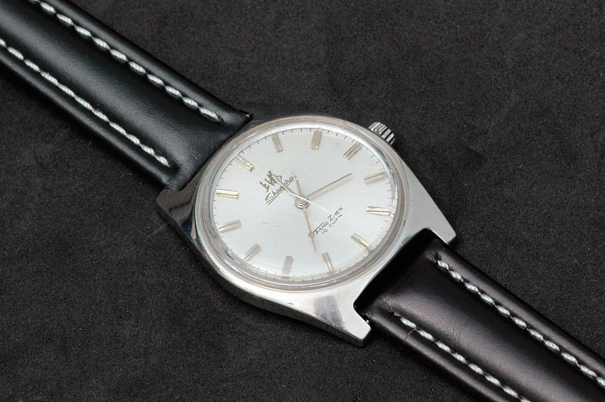

Shanghai 7120 - A Timeless Piece from My Collection
A Nod to Chinese Watchmaking Heritage
Among the watches in my collection, the Shanghai 7120 holds a special place. This vintage-inspired mechanical watch, produced by the Shanghai Watch Factory, is a testament to the ingenuity and craftsmanship of Chinese horology in the 1970s. Its simple yet elegant design makes it a standout, and I’m thrilled to share why this piece is so dear to me.
Design and Build
The Shanghai 7120 boasts a classic 36mm stainless steel case, which feels just right on the wrist—neither too bulky nor too dainty. The dial is clean and uncluttered, with a dressy aesthetic that pairs beautifully with both formal attire and casual outfits. The watch’s slim profile makes it incredibly comfortable for all-day wear, and the organic glass crystal adds a touch of retro charm. I’ve opted for a 19mm leather strap with a stainless steel buckle, which complements the watch’s understated elegance. 
The Heart of the Watch
At its core, the Shanghai 7120 is powered by the Tongji standard movement, a 19-jewel hand-wind mechanism that beats at 21,600 vibrations per hour. I find the ritual of winding it each morning oddly satisfying—it’s a moment to connect with the watch. While not as precise as modern quartz movements, mine keeps time within 5-10 seconds per day with a bit of adjustment, which is impressive for a watch of its vintage roots. The movement is shock-protected, a feature that adds durability to this affordable gem.
A Piece of History
Produced in the late 1970s, the Shanghai 7120 was part of a wave of watches that marked the rise of the Chinese watch industry. Often dubbed the “Rolex of China” in its heyday, it was a symbol of reliability and accessibility. Millions were made, yet each one feels personal, carrying the weight of a bygone era. My 7120, likely from around 1978, has a certain patina that tells a story of its own, making it more than just a timekeeper.
Why I Love It
What draws me to the Shanghai 7120 is its authenticity. It doesn’t pretend to be anything it’s not—no faux European branding here, just honest Chinese craftsmanship. It’s also remarkably affordable; I picked mine up for a song, and for the price, the build quality is astonishing. Whether I’m wearing it to a meeting or a weekend outing, it sparks conversations among watch enthusiasts who appreciate its historical significance and minimalist charm.
Final Thoughts
The Shanghai 7120 is a reminder that you don’t need to spend a fortune to own a watch with character and history. Its blend of vintage aesthetics, reliable mechanics, and cultural significance makes it a treasure in my collection. If you’re after a piece that’s both a conversation starter and a nod to horological heritage, the 7120 is well worth seeking out.